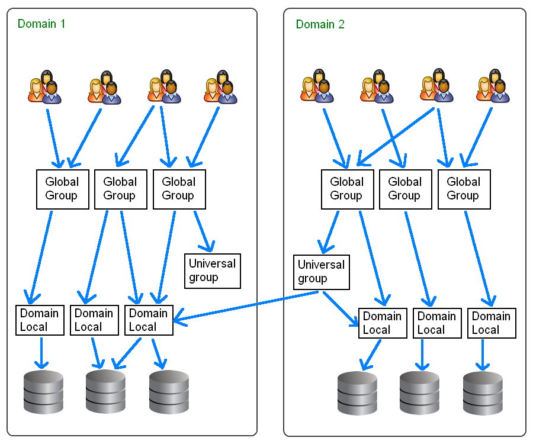
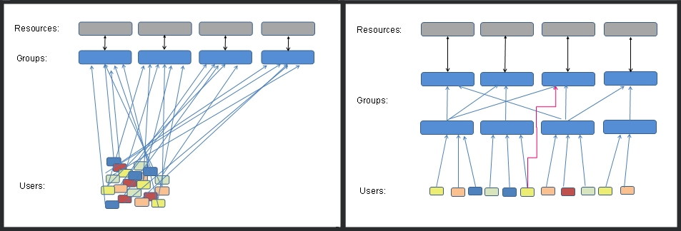
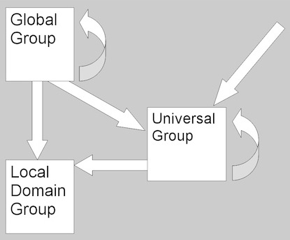

This page describes the different types of groups, group scope and nesting permissions within and across WANS and domains.
Security groups are used to control access to resources.
Security groups can also be used as email distribution lists.Distribution groups can be used only for email distribution lists, or simple administrative groupings.
Distribution groups cannot be used for access control because they are not "security enabled."
Assuming a Native-mode enterprise.
Universal groups
Provide a simple 'does everything' group suitable mainly for small networks. Typically, organizations using WANs should use Universal groups only for relatively static groups in which memberships change rarely. Changes in membership will impose global catalog replication throughout an entire enterprise.Global groups
Provide domain-centric membership, place all user accounts into Global groups. Global groups can be nested within other Global groups, this may be particularly useful when delegating OU administrative functionality.
It can be useful to give each Global group a name that is meaningful to the staff involved, i.e. matching the name of a Team or a Project, particularly if the group is also to be used as an email distribution list.Domain Local groups
Used for the direct assignment of access permissions on files, printer queues, and other such resources.It can be useful to give each Domain Local group a name that is meaningful to the IT Operations team e.g. if a group assigns rights to a shared folder on a specific server then the group name might include a prefix or suffix indicating the server name.
Local groups
Stored on the local SAM (Local Computer) use for security settings that apply just to this one machine.
Local groups will work even if the network becomes unavailable, e.g. during a disaster recovery exercise.
Place users in Global groups, nest those inside Domain Local groups which in turn are used to apply permissions, as shown below. This will also maximise performance in a multi-domain forest.

Group membership is evaluated when a user logs on to a domain. To be sure that any membership changes have taken effect, ask the users to log-off. In contrast ACL changes or permissions applied directly to User accounts will take place immediately.
Granting permissions using a group from a different domain is only possible where a trust relationship exists between the domains.
In a single domain the scope of groups will have no effect on performance. Global groups can be used for everything but you may still wish to nest groups and use Domain Local Groups to simplify management.
The fact that you cannot add a Domain Local group to a Global group may seem like an unwanted limitation but can actually be useful to enforce the correct inheritance of rights. A common mistake is adding group permissions the wrong way around. e.g. a resource group (such as one for color printers) is added to an organisational group (such as the personnel dept) if at a later date you add someone else to the colour printers group then they will also be able to read all the personnel files.
If all organisational groups are Global and resource groups are Domain Local then it is simply not possible to add group permissions the wrong way around. Within a single domain individual User accounts may join either type of group, so in the above example if one extra user needed access to the printers they could still be added directly to the Domain Local colour printer group.
It is tempting to use the same groups to hold users and also apply resource permissions but this seemingly simple setup may actually involve more effort to maintain.
For example, you have a finance department with 25 accountants and clerks, they need access to the Crest system, they also need editor permissions on the intranet and they need access to all the shared Account_Balances spreadsheets.
A common way to deal with this is to create 3 groups and add the 25 people to each:
25 25 25 [CREST] [INTRANET] [ACCOUNT_BALANCES]
The extra work starts when someone changes job or a new hire arrives, now someone has to remember and sort out which groups each of these people needs to be added to or removed from.
The better way of managing this, is to still create the 3 groups as before but also create a group called Accounting, put the 25 people into the Accounting group, and make all the resources available to the group rather than to individuals.
25
[ACCOUNTING Group]
[res_CREST] [res_INTRANET] [res_ACCOUNT_BALANCES]
Now when a new hire arrives we add them to the accounting group and they will automatically get everything they need. Similarly when someone changes job we remove them from the accounting group and add them to a different group appropriate to their new role. Also note that this arrangement only requires 28 permissions to be set instead of 75.
Separating people and resources also makes it easy to temporarily remove access e.g. during maintenance downtime. In the above example you could just remove the Accounting group from the res_Crest group. This is much easier than having to either remove (and then later accurately replace) a bunch of individual user accounts, or having to edit the actual permissions applied to files/printers/databases.
The two diagrams below both show 22 permissions being applied:

With a flat permission structure there are fewer groups to maintain.
With separate groups for users and resources, there are fewer user permissions to manage.
Rules that govern when a group may be added to another group (same domain):
- Global groups can be nested within Domain Local groups, Universal groups and within other Global groups in the same domain.
- Universal groups can be nested within Domain Local groups and within other Universal groups in any domain.
- A Domain Local group cannot be nested within a Global or a Universal group.

Rules that govern when a group may be added to another group (different domain):
- Domain Local groups can grant access to resources on the same domain. For example a Domain Local group named Sales on the SS64.local domain can only grant access to resources on that domain, and not on SS64.com
- Domain Local groups can accept anything, except for Domain Local groups from another domain. Domain Local groups accept user accounts from any domain.
- Global groups can grant access to anything, including files/folders in any domain.
- Global groups cannot be nested across domains. You cannot take a Global group from SS64.local, and nest it within another Global group in SS64.com.
- A user or computer account from one domain cannot be nested within a Global group in another domain.
- Universal groups accept user/computer accounts from any domain. A Global group can also be nested within a Universal group (from any domain).
A Universal group can be nested within another Universal group or Domain Local group in any domain.
| Group Scope | Location | Local Users can join? | Domain Users can join? | User accounts from another domain? | Local Computer accounts | Domain Computer accounts | Computer accounts from another domain | Machine Local groups | Domain Local groups | Global groups | Universal groups |
| Machine Local | Stored in local sam database | Yes | Yes | No | No | No | Yes | Yes | Yes | ||
| Domain Local | Stored in AD | No | Yes | Yes | No | Yes | Yes | No | Yes (same domain) |
Yes | Yes |
| Global | Stored in AD | No | Yes | No | No | Yes | No | No | No | Yes (same domain) |
No |
| Universal | Stored in AD | No | Yes | Yes | No | Yes | Yes | No | No | Yes | Yes |
| Group Scope | Location | Can act as distribution list? | File Permissions (local machine) | File Permissions Domain Fileserver | File/Printer SHARE permissions | Can be Mail enabled | Can use to assign Mailbox permissions | Permissions on Active Directory objects |
| Machine Local | Stored in local sam database | No | Yes | No | Yes (same machine only) |
No | No | No |
| Domain Local | Stored in AD | Yes | Yes | Yes | Yes | Yes | Yes | Yes* |
| Global | Stored in AD | Yes | Yes | Yes* | Yes* | Yes | Yes | Yes |
| Universal | Stored in AD | Yes | Yes | Yes* | Yes* | Yes | Yes | Yes |
* Possible but not recommended by Microsoft.
Admin rights
To modify groups in AD, you must be a member of the Account Operators group, the Domain Admins group, or the Enterprise Admins group, or you must have been delegated the appropriate authority.
“In the long history of humankind (and animal kind, too) those who learned to collaborate and improvise most effectively have prevailed” ~ Charles Darwin
Related
Built-in Groups - Built-In Users and Security Groups
NET localgroup / NET localgroup /domain / NET group /domain - Create new groups.
Q231273 - Group Type and Scope Usage.
Q271876 - Large Numbers of ACEs in ACLs Impair Directory Service Performance (slow logon times.)
Q909264 - Naming conventions in Active Directory for computers, domains, sites, and OUs.
Q811965 - Domain Local Groups do not appear when you edit a group policy object.